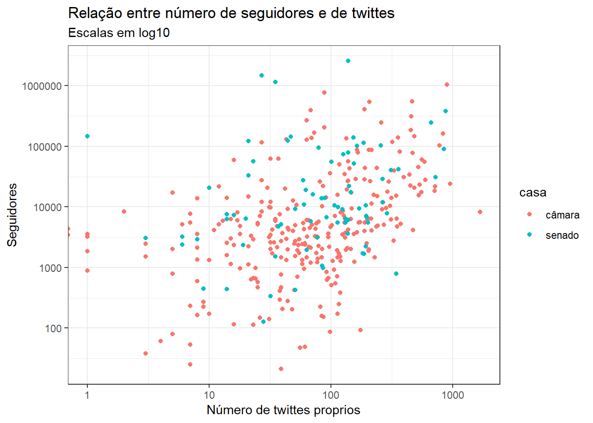
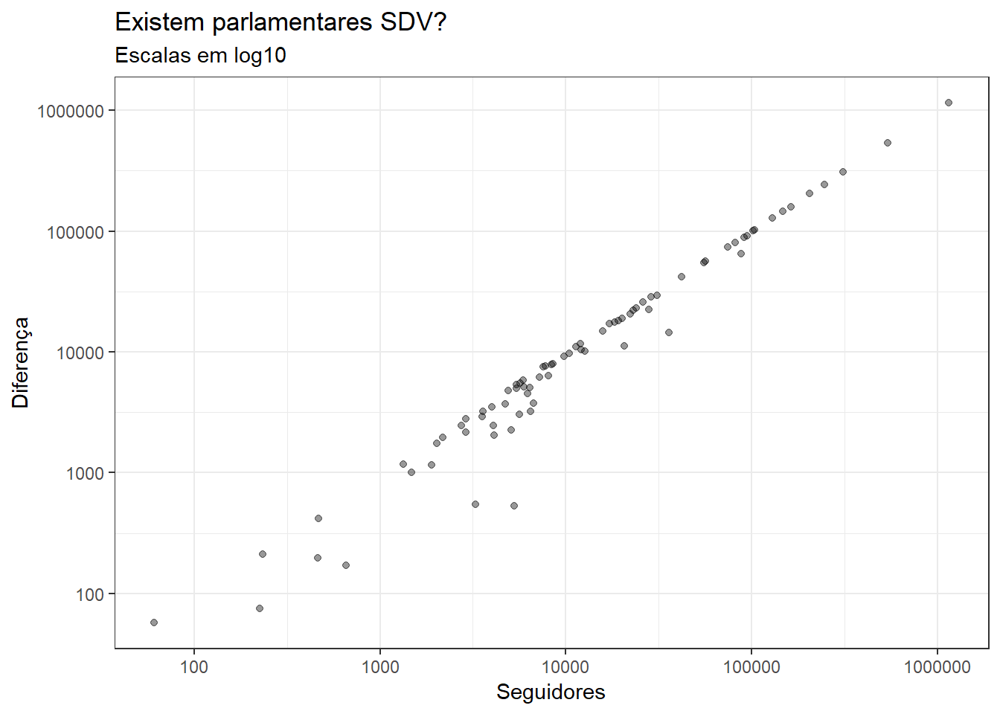
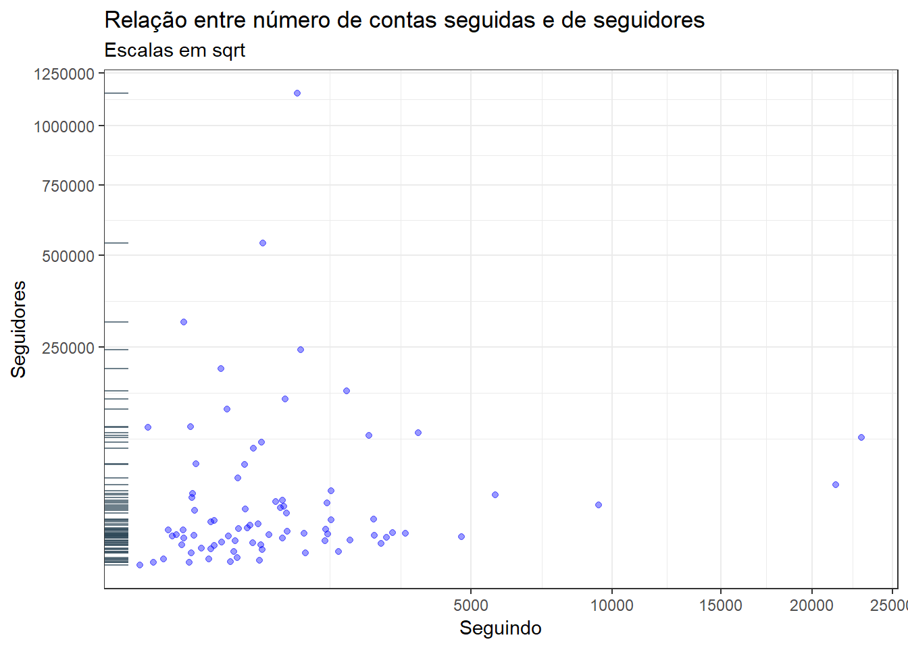

Como visto em analises anteriores, a utilização do Twitter por parte dos parlamentares segue algumas caracteristicas de acordo com certas diretrizes. Como por exemplo, quais são os partidos mais ativos, ou qual casa que tem maioria dos parlamentares na rede social.
Todas essas analises foram feitas com base em “classificações”, com base em certa caracteristicas. Agora, vamos nos deter a fazer observações com foco mais em associações e correlações entre valores do mesmo dataset que não sejam qualitativos, e sim quantitativos.
glimpse(atividade)## Observations: 608
## Variables: 19
## $ id_parlamentar <chr> "204554", "204521", "204379", "204560", ...
## $ casa <chr> "câmara", "câmara", "câmara", "câmara", ...
## $ nome_eleitoral <chr> "ABÍLIO SANTANA", "ABOU ANNI", "ACÁCIO F...
## $ partido <chr> "PR", "PSL", "PROS", "PSDB", "NOVO", "PP...
## $ UF <chr> "BA", "SP", "AP", "BA", "SP", "GO", "MG"...
## $ twitter <chr> "AbilioSantana_", "abouannipv", "Favacho...
## $ seguidores <dbl> NA, NA, NA, NA, 4652, NA, NA, NA, NA, NA...
## $ segue <dbl> NA, NA, NA, NA, 315, NA, NA, NA, NA, NA,...
## $ n_proprio <dbl> 0, 0, 0, 0, 99, 0, 0, 0, 0, 0, 0, 0, NA,...
## $ n_retweet <dbl> 0, 0, 0, 0, 9, 0, 0, 0, 0, 0, 0, 0, NA, ...
## $ engaj_total <dbl> 0, 0, 0, 0, 7090, 0, 0, 0, 0, 0, 0, 0, N...
## $ engaj_total_proprio <dbl> 0, 0, 0, 0, 6701, 0, 0, 0, 0, 0, 0, 0, N...
## $ engaj_total_retweet <dbl> 0, 0, 0, 0, 389, 0, 0, 0, 0, 0, 0, 0, NA...
## $ engaj_mediano <dbl> 0.0, 0.0, 0.0, 0.0, 26.5, 0.0, 0.0, 0.0,...
## $ engaj_mediano_proprio <dbl> 0.0, 0.0, 0.0, 0.0, 22.5, 0.0, 0.0, 0.0,...
## $ engaj_mediano_retweet <dbl> 0.0, 0.0, 0.0, 0.0, 0.0, 0.0, 0.0, 0.0, ...
## $ engaj_max <dbl> 0, 0, 0, 0, 1031, 0, 0, 0, 0, 0, 0, 0, N...
## $ engaj_max_proprio <dbl> 0, 0, 0, 0, 1031, 0, 0, 0, 0, 0, 0, 0, N...
## $ engaj_max_retweet <dbl> 0, 0, 0, 0, 99, 0, 0, 0, 0, 0, 0, 0, NA,...Para analisar como segue a relação de número seguidores X twittes, os valores estão dispostos no grafico com ambas as variaveis em log10 para que a visualização fique mais clara de ser vista. Foi utilizada a diferença de cores com base na casa para que se possa ver se o resultado analisado é o mesmo tanto para os parlamentares do senado quando da câmara.
parlamentares_ativos <- atividade %>% filter(!is.na(twitter))
media <- parlamentares_ativos%>% mean(seguidores)
parlamentares_ativos %>%
ggplot(aes(x = n_proprio, y = seguidores, color = casa)) +
geom_point()+
scale_y_log10() +
scale_x_log10() +
labs(
title = "Relação entre número de seguidores e de twittes",
subtitle = "Escalas em log10",
x = "Número de twittes proprios",
y = "Seguidores"
)
Conforme visto no gráfico, apesar de um pouco diversos, da para perceber que há uma tendencia de quanto maior o numero de twittes feitos pelos parlamentares, maior o número de seguidores também. Tanto para os senadores, quanto para os deputados, a tendencia é a mesma. Observa-se alguns pontos que destoam da maioria, como um senador que tem tem poucos twittes e muitos seguidores, ou o deputado com maior numero de twittes, que não tem um número de seguidores entre os mais altos.
No meio online existe o termo SDV, que quer dizer “Sigo de Volta”. Este termo é usado por usuarios, normalmente no twitter, que seguem todas as contas que o seguirem e assim atraem mais gente que querem seguidores também. Para analisar se utilizam dessa estrategia para conseguir seguidores, e consequentemente popularidade, vai ser utilizada a diferença entre seguidores e pessoas que o parlamentar segue. Para facilitar a visualização, vamos usar apenas os parlamentares dos partidos mais populares: PT e PSL.
parlamentares_ativos %>%
filter(!is.na(seguidores) & (partido == "PSL" | partido == "PT")) %>%
mutate(diferenca = seguidores-segue)%>%
ggplot(aes(x = seguidores, y = diferenca, show.legend = FALSE))+
geom_point(alpha = 0.4)+
scale_y_continuous(trans = "log10")+
scale_x_continuous(trans = "log10")+
labs(
title = "Existem parlamentares SDV?",
subtitle = "Escalas em log10",
x = "Seguidores",
y = "Diferença"
)
Pode analisar que há uma correlação bastante forte, onde ao passo que a quantidade se seguidores cresce, a diferença também cresce em mesma quantidade. Isso quer dizer que os parlamentares, em sua grande maioria, não está seguindo seus seguidores de volta como forma de acordo feitos pelos SDV’s.
Para reforçar as conclusoes da visualização anterior, vamos verificar agora a relação entre número de contas seguidas e de seguidores pelos parlamentares do PT e PSL.
parlamentares_ativos %>%
filter(!is.na(seguidores) & (partido == "PSL" | partido == "PT")) %>%
mutate(diferenca = seguidores-segue)%>%
ggplot(aes(x = segue, y = seguidores, show.legend = FALSE))+
geom_point(color = "blue", alpha = 0.4)+
geom_rug(alpha = .7, color = "#2F4858", sides = "l")+
scale_y_continuous(trans = "sqrt")+
scale_x_continuous(trans = "sqrt")+
labs(
title = "Relação entre número de contas seguidas e de seguidores",
subtitle = "Escalas em sqrt",
x = "Seguindo",
y = "Seguidores"
)
Pode-se verificar que que o número de contas seguidas é bem baixo comparado ao de seguidores. Algo previsto, pois de acordo com o gráfico anterior a diferença aumenta de acordo com os seguidores. Assim, os parlamentares não estão seguindo os seguidores de volta.